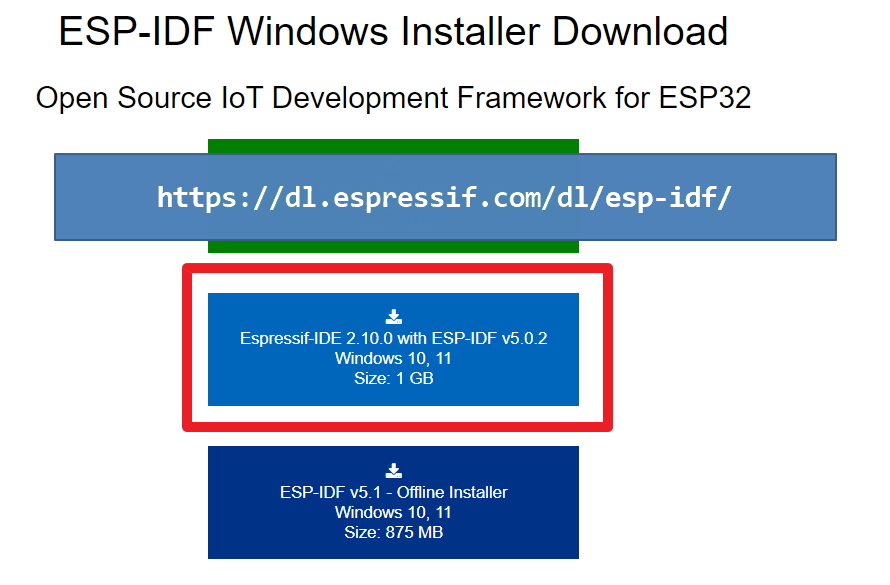

This installation process is based on Espressif-IDE .
Download Espressif IDE from
https://dl.espressif.com/dl/esp-idf/ .

Whole system will be installed in
C:\Espressif folder.
All example files are in
C:\Espressif\frameworks\esp-idf-v5.0.2\examples
Copy any project from examples folder to
C:\Espressif\frameworks\esp-idf-v5.0.2\ folder.
Such as I copied
C:\Espressif\frameworks\esp-idf-v5.0.2\examples\bluetooth\bluedroid\ble\gatt_server folder to
C:\Espressif\frameworks\esp-idf-v5.0.2\ location then started configuring or building project from command line.
To enter to ESP-IDF environment we may need to run
cd C:\Espressif
idf_cmd_init.bat
Then go to the copied project folder in command prompt.
cd gatt_server and apply following commands.
idf.py set-target esp32
idf.py menuconfig
idf.py build
idf.py -p COM9 flash
At this point during the flashing start, I had to press and release the RESET button on the ESP32-CAM board carefully.
This command flushes the board with the project firmware bin file and we need to press reset button again to check the result.
This bluetooth gatt server documentation is
Here .
The include headers are below :
#include <stdio.h>
#include <stdlib.h>
#include <string.h>
#include "freertos/FreeRTOS.h"
#include "freertos/task.h"
#include "freertos/event_groups.h"
#include "esp_system.h"
#include "esp_log.h"
#include "nvs_flash.h"
#include "esp_bt.h"
#include "esp_gap_ble_api.h"
#include "esp_gatts_api.h"
#include "esp_bt_defs.h"
#include "esp_bt_main.h"
#include "esp_gatt_common_api.h"
#include "sdkconfig.h"
esp_bt.h: implements BT controller and VHCI configuration procedures from the host side.
esp_bt_main.h: implements initialization and enabling of the Bluedroid stack.
esp_gap_ble_api.h: implements GAP configuration, such as advertising and connection parameters.
esp_gatts_api.h: implements GATT configuration, such as creating services and characteristics.
Main Entry Point
void app_main()
{
esp_err_t ret;
// Initialize NVS.
ret = nvs_flash_init();
if (ret == ESP_ERR_NVS_NO_FREE_PAGES || ret == ESP_ERR_NVS_NEW_VERSION_FOUND) {
ESP_ERROR_CHECK(nvs_flash_erase());
ret = nvs_flash_init();
}
ESP_ERROR_CHECK(ret);
esp_bt_controller_config_t bt_cfg = BT_CONTROLLER_INIT_CONFIG_DEFAULT();
ret = esp_bt_controller_init(&bt_cfg);
if (ret) {
ESP_LOGE(GATTS_TAG, "%s initialize controller failed", __func__);
return;
}
ret = esp_bt_controller_enable(ESP_BT_MODE_BLE);
if (ret) {
ESP_LOGE(GATTS_TAG, "%s enable controller failed", __func__);
return;
}
ret = esp_bluedroid_init();
if (ret) {
ESP_LOGE(GATTS_TAG, "%s init bluetooth failed", __func__);
return;
}
ret = esp_bluedroid_enable();
if (ret) {
ESP_LOGE(GATTS_TAG, "%s enable bluetooth failed", __func__);
return;
}
ret = esp_ble_gatts_register_callback(gatts_event_handler);
if (ret){
ESP_LOGE(GATTS_TAG, "gatts register error, error code = %x", ret);
return;
}
ret = esp_ble_gap_register_callback(gap_event_handler);
if (ret){
ESP_LOGE(GATTS_TAG, "gap register error, error code = %x", ret);
return;
}
ret = esp_ble_gatts_app_register(PROFILE_A_APP_ID);
if (ret){
ESP_LOGE(GATTS_TAG, "gatts app register error, error code = %x", ret);
return;
}
ret = esp_ble_gatts_app_register(PROFILE_B_APP_ID);
if (ret){
ESP_LOGE(GATTS_TAG, "gatts app register error, error code = %x", ret);
return;
}
esp_err_t local_mtu_ret = esp_ble_gatt_set_local_mtu(512);
if (local_mtu_ret){
ESP_LOGE(GATTS_TAG, "set local MTU failed, error code = %x", local_mtu_ret);
}
return;
}
This function
ret = nvs_flash_init(); initializes the flash memory to save credentials.
.
BT Controller and Stack Initializationesp_bt_controller_config_t bt_cfg = BT_CONTROLLER_INIT_CONFIG_DEFAULT();
The main function also initializes the BT controller by first creating a BT controller configuration structure named
esp_bt_controller_config_t with default settings generated by the BT_CONTROLLER_INIT_CONFIG_DEFAULT() macro.
The BT controller implements the Host Controller Interface (HCI) on the controller side, the Link Layer (LL)
and the Physical Layer (PHY). The BT Controller is invisible to the user applications and deals with the lower
layers of the BLE stack. The controller configuration includes setting the BT controller stack size, priority and HCI baud rate.
With the settings created, the BT controller is initialized and enabled with the esp_bt_controller_init() function:
esp_bt_controller_config_t bt_cfg = BT_CONTROLLER_INIT_CONFIG_DEFAULT();
ret = esp_bt_controller_init(&bt_cfg);
Next, the controller is enabled in BLE Mode.
ret = esp_bt_controller_enable(ESP_BT_MODE_BLE);
if you want
BLE + BT then we should enable controller with
ESP_BT_MODE_BTDM .
4 types of controller defines
1. ESP_BT_MODE_IDLE
2. ESP_BT_MODE_BLE
3. ESP_BT_MODE_CLASSIC_BT
4. ESP_BT_MODE_BTDM
After the initialization of the BT controller, the Bluedroid stack,
which includes the common definitions and APIs for both BT Classic and BLE, is initialized and enabled by using:
ret = esp_bluedroid_init();
ret = esp_bluedroid_enable();
The two main managers of events are the GAP and GATT event handlers.
The application needs to register a callback function for each event handler
in order to let the application know which functions are going to handle the GAP and GATT events:
esp_ble_gatts_register_callback(gatts_event_handler);
esp_ble_gap_register_callback(gap_event_handler);
The functions gatts_event_handler() and gap_event_handler() handle all the events that are pushed to the
application from the BLE stack.